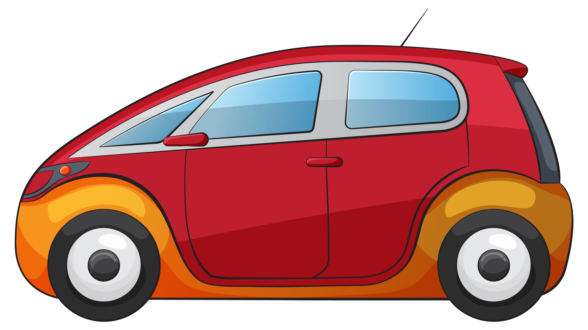

Életbiztosítás
- Haláleset esetén anyagi védelmet nyújt a családnak vagy kedvezményezettnek.
- Lehet kockázati vagy megtakarításos életbiztosítás is.
Egészségbiztosítás
- Segít a váratlan orvosi költségek fedezésében.
- Magánorvosi ellátás, műtétek, kórházi kezelések finanszírozása.
Lakásbiztosítás
- Védelmet nyújt a lakóingatlanra és a benne lévő értéktárgyakra.
- Tűz, betörés, árvíz vagy más károk esetén is.
Gépjármű-biztosítás

- Ide tartozik a kötelező felelősségbiztosítás (KGFB).
- A casco a saját jármű kárait is téríti (lopás, törés, elemi károk stb.).
infotablaszekcio
Kattints a táblázat megtekintéséhez
| Biztosítás típus | Előnyök |
|---|---|
| Életbiztosítás | Anyagi védelem a családnak |
| Egészségbiztosítás | Váratlan orvosi költségekhez segítség |